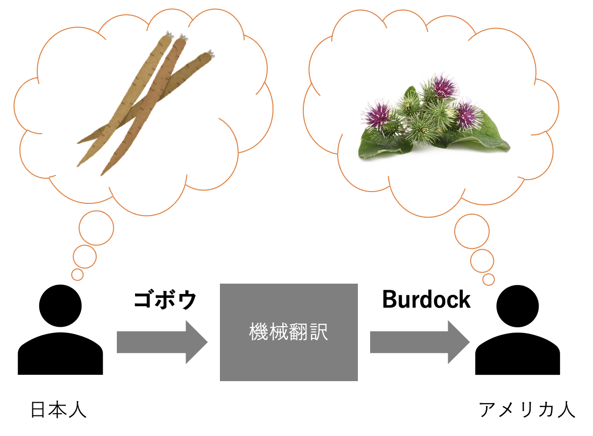
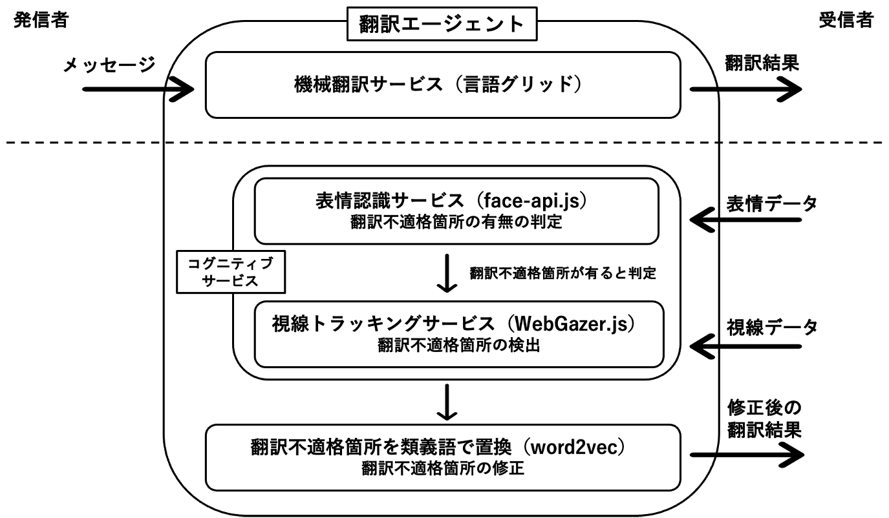

Collaboration Technology
We have been working toward tools and services to support intercultural collaboration, including machine translation embedded tools, cultural difference detection, facilitation agent, etc.

Communication Support Using Cultural Difference Detection Based On Image Features
Since people see things differently based on their background, images database can be used and compared to identified cultural difference. In this research, we study and conduct experiments on the relationship between image features of image search results and words in different languages, aiming at creating automated cultural difference deteciton tool.

Translation agent using cognitive services
In machine translation mediated communication, several times the machine translation produced messages that are comprehensible or difficult to understand. In this study, we are developing an intelligent agent that helps supporting the user when it detect a doubt or misunderstanding from the user and offering alternative translation results.

Cultural Difference Detection Based On Word Vector
One word can be perceived differently in different languages and cultures. Forexample, "whale" might not be perceived as food in many countries, but in Japan, whale meat can be consumed. By converting words into vectors, we can associate the concept and study the difference between two culture. From the previous example the word "whale" in Japanese is associated with food while the same word in English is not.
Using natural language processing, we are trying to extract cultural difference from existing text data, for example, from the Wikipedia. Analyzing the difference association between words in different language Wikipedia pages can be our trace to cultural difference. For instance, "pig" can be presented with "luck" in some cultures, but it can be associated with "cute" in the other cultures
Facilitation Analysis of Children's Cross-cultural Collaboration
We also conducted field studies in intercultural collaboration events, such as children workshops. We conducted ethnographic study and analyze children's multilingual chatlog and look into the effects of each type of facilitation technics on children's response.。